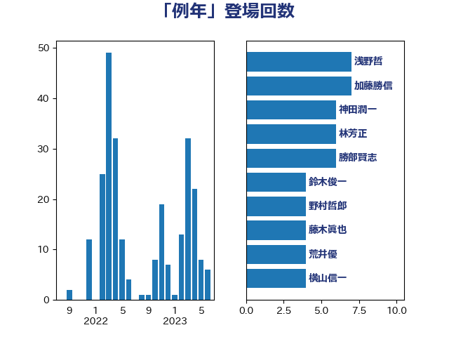

単語「例年」

| 浅野哲 | 国民民主党 | 7 回 |
| 加藤勝信 | 自由民主党 | 7 回 |
| 神田潤一 | 自由民主党 | 6 回 |
| 林芳正 | 自由民主党 | 6 回 |
| 勝部賢志 | 立憲民主党 | 6 回 |
| 鈴木俊一 | 自由民主党 | 4 回 |
| 野村哲郎 | 自由民主党 | 4 回 |
| 藤木眞也 | 自由民主党 | 4 回 |
| 荒井優 | 立憲民主党 | 4 回 |
| 横山信一 | 公明党 | 4 回 |
| 吉川元 | 立憲民主党 | 4 回 |
| 高橋千鶴子 | 日本共産党 | 3 回 |
| 石川香織 | 立憲民主党 | 3 回 |
| 城井崇 | 立憲民主党 | 3 回 |
| 串田誠一 | 日本維新の会 | 3 回 |
| 鬼木誠 | 立憲民主党 | 2 回 |
| 野田聖子 | 自由民主党 | 2 回 |
| 足立敏之 | 自由民主党 | 2 回 |
| 若松謙維 | 公明党 | 2 回 |
| 緑川貴士 | 立憲民主党 | 2 回 |
| 紙智子 | 日本共産党 | 2 回 |
| 竹詰仁 | 国民民主党 | 2 回 |
| 神谷宗幣 | 参政党 | 2 回 |
| 田畑裕明 | 自由民主党 | 2 回 |
| 水岡俊一 | 立憲民主党 | 2 回 |
| 斉藤鉄夫 | 公明党 | 2 回 |
| 後藤茂之 | 自由民主党 | 2 回 |
| 川田龍平 | 立憲民主党 | 2 回 |
| 岸真紀子 | 立憲民主党 | 2 回 |
| 岡田直樹 | 自由民主党 | 2 回 |
| 小森卓郎 | 自由民主党 | 2 回 |
| 寺田稔 | 自由民主党 | 2 回 |
| 宮崎雅夫 | 自由民主党 | 2 回 |
| 伊藤岳 | 日本共産党 | 2 回 |
| おおつき紅葉 | 立憲民主党 | 2 回 |
| 音喜多駿 | 日本維新の会 | 1 回 |
| 鈴木義弘 | 国民民主党 | 1 回 |
| 鈴木庸介 | 立憲民主党 | 1 回 |
| 金子道仁 | 日本維新の会 | 1 回 |
| 金子恵美 | 立憲民主党 | 1 回 |
| 金子恭之 | 自由民主党 | 1 回 |
| 野中厚 | 自由民主党 | 1 回 |
| 道下大樹 | 立憲民主党 | 1 回 |
| 逢坂誠二 | 立憲民主党 | 1 回 |
| 西銘恒三郎 | 自由民主党 | 1 回 |
| 西村明宏 | 自由民主党 | 1 回 |
| 西村康稔 | 自由民主党 | 1 回 |
| 菅直人 | 立憲民主党 | 1 回 |
| 芳賀道也 | 国民民主党 | 1 回 |
| 舩後靖彦 | れいわ新選組 | 1 回 |
| 羽田次郎 | 立憲民主党 | 1 回 |
| 米山隆一 | 立憲民主党 | 1 回 |
| 簗和生 | 自由民主党 | 1 回 |
| 稲津久 | 公明党 | 1 回 |
| 石川博崇 | 公明党 | 1 回 |
| 石井正弘 | 自由民主党 | 1 回 |
| 田中健 | 国民民主党 | 1 回 |
| 牧野たかお | 自由民主党 | 1 回 |
| 渡辺創 | 立憲民主党 | 1 回 |
| 清水貴之 | 日本維新の会 | 1 回 |
| 清水真人 | 自由民主党 | 1 回 |
| 浜田聡 | NHK党 | 1 回 |
| 浅川義治 | 日本維新の会 | 1 回 |
| 武部新 | 自由民主党 | 1 回 |
| 榛葉賀津也 | 国民民主党 | 1 回 |
| 梶原大介 | 自由民主党 | 1 回 |
| 梅村みずほ | 日本維新の会 | 1 回 |
| 松野博一 | 自由民主党 | 1 回 |
| 松沢成文 | 日本維新の会 | 1 回 |
| 松本剛明 | 自由民主党 | 1 回 |
| 東徹 | 日本維新の会 | 1 回 |
| 杉尾秀哉 | 立憲民主党 | 1 回 |
| 杉久武 | 公明党 | 1 回 |
| 末松信介 | 自由民主党 | 1 回 |
| 早稲田ゆき | 立憲民主党 | 1 回 |
| 新谷正義 | 自由民主党 | 1 回 |
| 徳永久志 | 無所属 | 1 回 |
| 徳永エリ | 立憲民主党 | 1 回 |
| 岸田文雄 | 自由民主党 | 1 回 |
| 岩本剛人 | 自由民主党 | 1 回 |
| 岡本あき子 | 立憲民主党 | 1 回 |
| 山岸一生 | 立憲民主党 | 1 回 |
| 小林一大 | 自由民主党 | 1 回 |
| 太栄志 | 立憲民主党 | 1 回 |
| 大塚耕平 | 国民民主党 | 1 回 |
| 堀場幸子 | 日本維新の会 | 1 回 |
| 坂本祐之輔 | 立憲民主党 | 1 回 |
| 吉田統彦 | 立憲民主党 | 1 回 |
| 吉田宣弘 | 公明党 | 1 回 |
| 加藤鮎子 | 自由民主党 | 1 回 |
| 伊藤孝恵 | 国民民主党 | 1 回 |
| 中村裕之 | 自由民主党 | 1 回 |
| 中島克仁 | 立憲民主党 | 1 回 |
| 下野六太 | 公明党 | 1 回 |
| 上田英俊 | 自由民主党 | 1 回 |
| こやり隆史 | 自由民主党 | 1 回 |